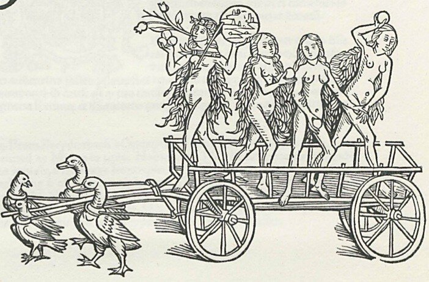

Thursday, February the 21st, 2013
back to: title, date or indexes
I am indebted to Richard Carter for drawing to my attention this woodcut he came across on Twitter, where it was given the caption “just a bunch of fruit-wielding naked women riding a duck-driven cart”.
